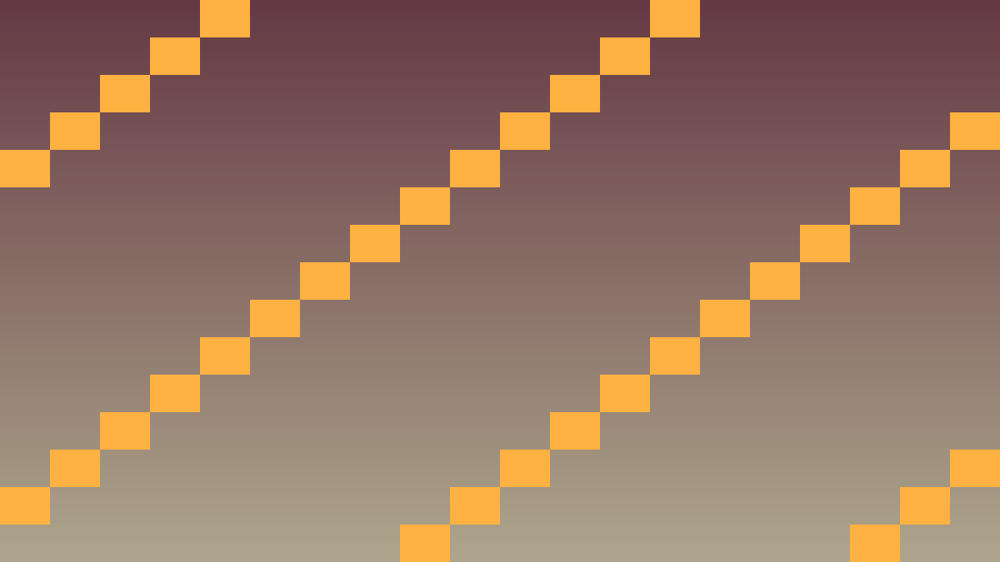
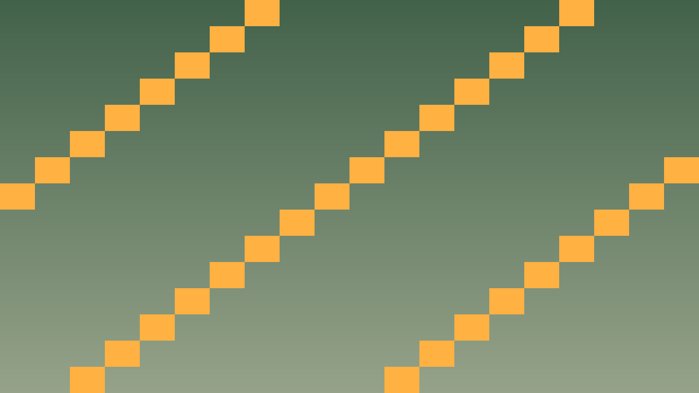

Tavs šīs stundas izaicinājums: Apvienot OOP, signālus, struct un GDExtension klases pilnvērtīgā rundām balstītā klases turnīra simulācijā.
Pirms sāc: izmanto iepriekš apgūto un šīs lapas teorijas/koda piemērus. Ja vajadzīga jauna komanda vai rīks, vispirms atrodi tās paraugu teorijas sadaļā.
Rundām balstīta klases turnīra simulācija ar trim spēlētāja dalībniekiem (Captain, Presenter, TimeKeeper) pret nejauši ģenerētiem šķēršļiem (PrinterQueue, WifiDrop, MissingMarker).
Turnīra plūsma:
Klašu hierarhija: Participant (base) → Captain, Presenter, TimeKeeper; Obstacle (base) → PrinterQueue, WifiDrop, MissingMarker.
Atceries: šajā stundā nepietiek tikai panākt redzamu efektu editorā. Paskaidro, kura C++ klase glabā stāvokli, kura metode to maina un kā Godot node struktūra šo kodu izmanto.
Pārbaudi: katrai būtiskai turnīra lomai ir C++ klase ar header/implementation dalījumu, konstruktoriem, metodēm, signāliem vai mantošanu.
#include <godot_cpp/variant/string.hpp>
using namespace godot;
struct OopCheckpoint {
String lesson = "3.6 Noslēguma projekts: Klases turnīra simulators";
bool uses_cpp = true;
bool has_header_file = true;
bool has_single_responsibility = true;
bool uses_godot_registration = true;
};Atpazīsti šīs stundas galveno ideju un sasaisti to ar gala projektu Klases turnīra simulators.
.hpp, .cpp vai Godot scēnas failā, nevis uzreiz lielu funkciju.klases_punkti, zvana_taimeris, pazudusais_markieris vai kafijas_pauze; mazliet humora drīkst, bet kodam jāpaliek skaidram.Izmanto šīs stundas prasmi nelielā, strādājošā projekta daļā.
.hpp, .cpp vai Godot scēnas failā, izmantojot teorijas piemēru kā sākumpunktu.Pārbaudi risinājumu, salīdzini rezultātus un atrodi, ko uzlabot.
Pievieno nelielu radošu uzlabojumu ar klases dzīves piemēru, nepārsniedzot apgūto vielu.
std::unique_ptr vai Godot's add_child (kas pārvalda lifetime).

class TournamentManager : public Node {
GDCLASS(TournamentManager, Node)
private:
std::vector<Participant*> party;
std::vector<Obstacle*> obstacles;
int current_turn = 0;
public:
void start_tournament() {
for (Obstacle* e : obstacles) {
e->connect("finished", Callable(this, "on_obstacle_finished"));
}
next_turn();
}
void execute_focus(Participant* participant, Obstacle* target) {
int penalty = participant->get_stats().get_total_focus();
target->apply_penalty(penalty);
if (obstacles.empty()) emit_signal("tournament_won");
else next_turn();
}
void on_obstacle_finished() {
// Atrod un noņem pabeigto šķērsli
obstacles.erase(...);
}
};